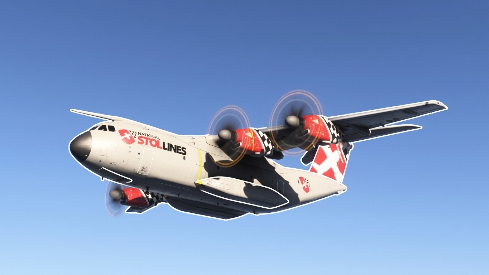
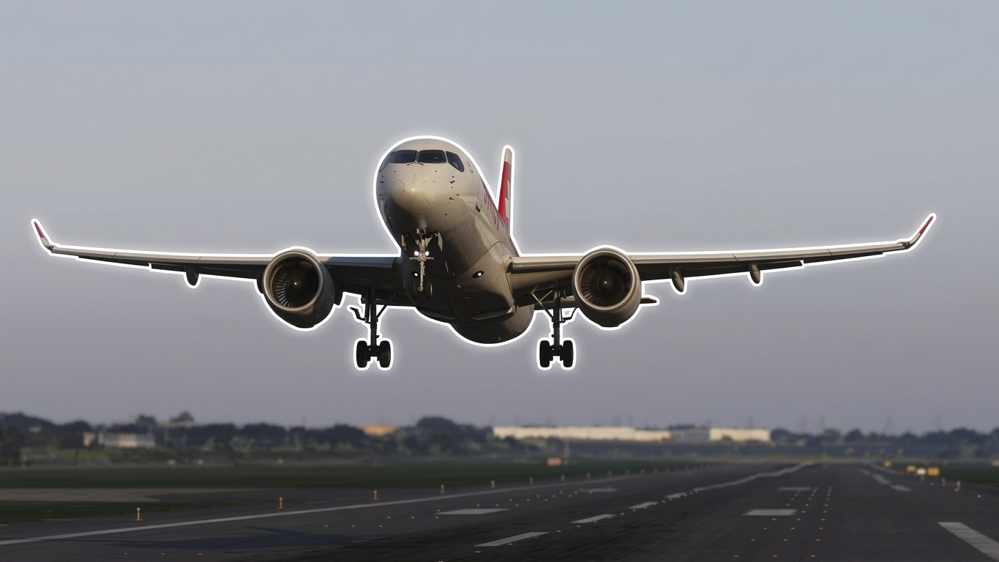
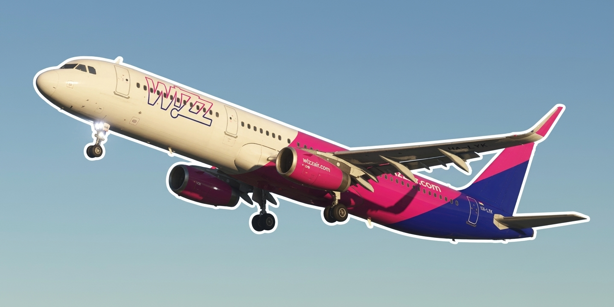
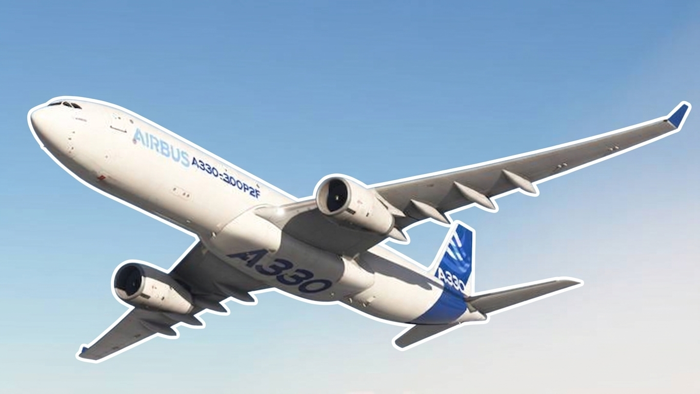
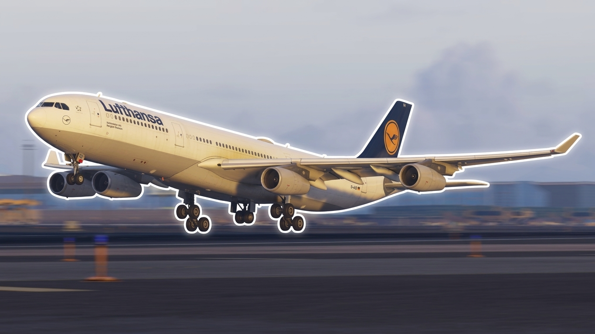
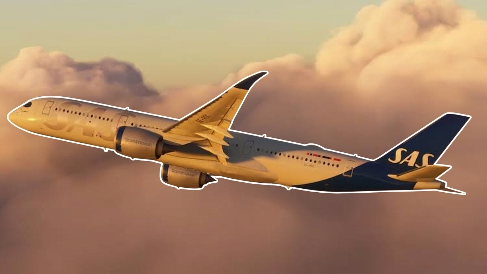
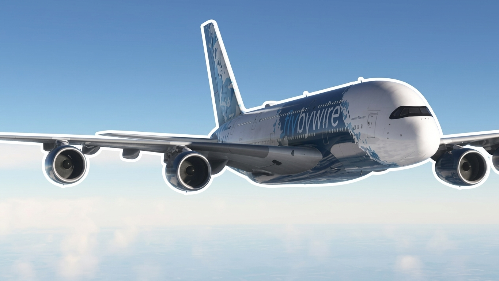

Kennzahlen und Checklisten für die Airbus-Flotte, vereinfacht und aufbereitet für die private Flugsimulation. Werte dienen als schnelle Gedächtnisstütze und ersetzen keine offiziellen Herstellerunterlagen.
Flugzeugtyp wählen
Airbus A400M
Weights
Range
Altitude

Der Airbus A400M Atlas ist ein vierstrahliges Turboprop-Militärtransportflugzeug, das strategische (hohe Reichweite/Nutzlast) und taktische Transportfähigkeiten (Landung auf unbefestigten Pisten) vereint. Der A400M wurde am 1. August 2013 offiziell in Dienst gestellt. Das erste Serienflugzeug wurde an die französische Luftwaffe (Armée de l’air) übergeben.
Bei der deutschen Luftwaffe ging die erste Maschine knapp anderthalb Jahre später, am 19. Dezember 2014, in Dienst.
Airbus A220
Weights
Pax
Range
Altitude

Der Airbus A220 (ursprünglich von Bombardier als CSeries entwickelt) ist ein modernes, zweistrahliges Schmalrumpfflugzeug für Kurz- und Mittelstrecken im Marktsegment von 100 bis 160 Sitzplätzen.
Airbus A320
Weights
Range
Pax
Altitude

Der Airbus A320 ist das weltweit erfolgreichste zweistrahlige Schmalrumpfflugzeug für Kurz- und Mittelstrecken und bildet das Rückgrat moderner Passagierflotten. Bei seiner Indienststellung im Jahr 1988 setzte er Maßstäbe als erstes ziviles Verkehrsflugzeug mit digitaler Fly-by-Wire-Steuerung, bei der die Piloten das Flugzeug über Side-Sticks statt über ein klassisches Steuerhorn bedienen.
In der Standardkonfiguration bietet das Basismodell Platz für etwa 150 bis 180 Passagiere in einer klassischen Bestuhlung mit drei Sitzen auf jeder Seite des Mittelgangs. Neben der Standardversion gehört zur A320-Familie auch der verkürzte A319 für rund 120 bis 140 Passagiere sowie der gestreckte A321, der je nach Kabinenaufteilung bis zu 244 Passagiere befördern kann.
Airbus A330
Weights
Range
Pax
Altitude

Der Airbus A330 ist ein weltweit sehr erfolgreiches zweistrahliges Großraumflugzeug für Mittel- und Langstrecken und bildet eine verlässliche Säule vieler internationaler Fluggesellschaften. Bei seiner ersten Indienststellung im Jahr 1994 setzte er Maßstäbe, indem er die fortschrittliche Fly-by-Wire-Technologie der A320-Familie erstmals in ein Großraumflugzeug integrierte und so den Weg für hochmoderne Langstreckenjets ebnete.
In der typischen Kabinenaufteilung bietet der Großraumjet Platz für etwa 250 bis 300 Passagiere in einer typischen Mehrklassen-Konfiguration mit zwei Mittelgängen und einer komfortablen Bestuhlung. Die Modellfamilie umfasst den etwas kürzeren A330-200 mit besonders hoher Reichweite sowie den gestreckten A330-300, der je nach Dichte der Bestuhlung bis zu 440 Passagiere befördern kann.
Airbus A340
Weights A340-300
Weights A340-600
Range
Pax
Altitude

Der Airbus A340 ist ein weltweit bekanntes vierstrahliges Großraumflugzeug für Lang- und Ultra-Langstrecken und bildete über viele Jahre das verlässliche Rückgrat internationaler Fluggesellschaften. Bei seiner ersten Indienststellung im Jahr 1993 setzte er Maßstäbe, indem er dank seiner vier Triebwerke lange Ozeanüberquerungen ohne ETOPS-Beschränkungen ermöglichte und so den Weg für neue, direkte interkontinentale Flugrouten ebnete.
In der typischen Kabinenaufteilung bietet der Großraumjet Platz für etwa 250 bis 380 Passagiere in einer typischen Mehrklassen-Konfiguration mit zwei Mittelgängen und einer komfortablen Bestuhlung. Die Modellfamilie umfasst die ursprünglichen Varianten A340-200 und A340-300 sowie die später entwickelten, deutlich längeren Versionen A340-500 mit extrem hoher Reichweite und A340-600, der je nach Dichte der Bestuhlung bis zu 475 Passagiere.
Airbus A350
Weights A350-900
Range
Pax
Altitude

Der Airbus A350 ist ein weltweit sehr erfolgreiches zweistrahliges Großraumflugzeug für Lang- und Ultra-Langstrecken und bildet das moderne Flaggschiff vieler internationaler Fluggesellschaften. Bei seiner ersten Indienststellung im Jahr 2015 setzte er Maßstäbe, indem er fortschrittliche Verbundwerkstoffe wie Kohlenstofffaser-Kunststoff (CFK) in großem Umfang in die Rumpf- und Tragflächenstruktur integrierte und so den Weg für extrem effiziente Langstreckenjets der nächsten Generation ebnete.
In der typischen Kabinenaufteilung bietet der Großraumjet Platz für etwa 300 bis 350 Passagiere in einer typischen Mehrklassen-Konfiguration mit zwei Mittelgängen und einer besonders leisen, komfortablen Bestuhlung. Die Modellfamilie umfasst den A350-900 mit hoher Reichweite und Flexibilität sowie den gestreckten A350-1000, der je nach Dichte der Bestuhlung bis zu 480 Passagiere befördern kann.
Airbus A380
Weights
Range
Pax
Altitude

Der A380 ist nicht einfach nur ein Flugzeug – er ist eine Ikone der Luftfahrtgeschichte. Als größtes in Serie gebautes Passagierflugzeug der Welt hat der zweistöckige Gigant das Reisen auf der Langstrecke neu definiert.
- Erstflug & Indienststellung: Flog erstmals 2005 und nahm 2007 bei Singapore Airlines den Liniendienst auf.
- Kapazität: Bietet auf zwei durchgehenden Passagierdecks typischerweise Platz für rund 500 Passagiere, kann in einer reinen Economy-Bestuhlung aber bis zu 853 Menschen befördern.
- Besonderheiten: Setzte neue Standards beim Passagierkomfort durch extrem leise Kabinen, viel Raumgefühl und Platz für Luxusfeatures wie Onboard-Bars oder First-Class-Duschen.
- Technik: Vier Triebwerke, eine Spannweite von beinahe 80 Metern und ein maximales Startgewicht von bis zu 575 Tonnen.
Trotz seiner Beliebtheit bei Fluggästen erwies sich das Konzept des Megaliner-Hub-to-Hub-Systems als wirtschaftlich schwierig. Die Luftfahrt entwickelte sich zunehmend hin zu flexibleren, zweistrahligen Jets (wie A350 oder Boeing 787). Airbus stellte die Produktion des A380 daher 2021 ein – dennoch bleibt der „Superjumbo“ bei vielen Airlines und Passagieren ein absoluter Favourit und erlebt aktuell auf vielen dicht beflogenen Routen ein starkes Comeback.